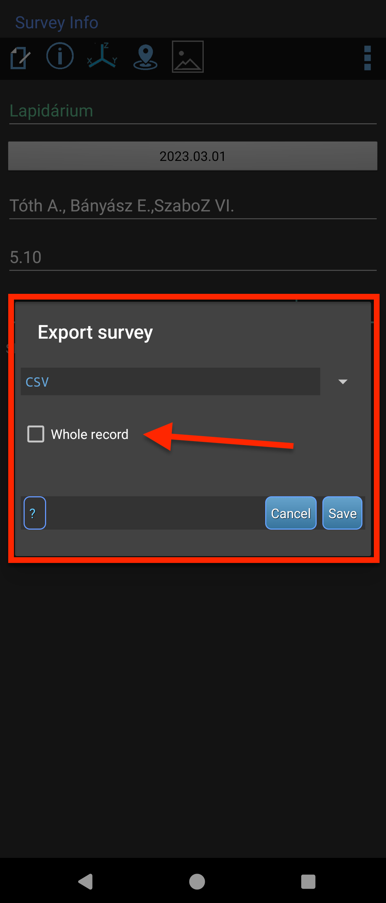
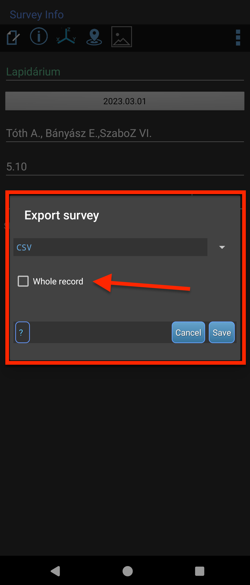

Adatok importálása
Importálás áttekintése
A Speleo Studio több különböző formátumot támogat a barlang és felszíni adatok importálásához, amely lehetővé teszi, hogy a meglévő felmérési adatokat könnyedén betöltse az alkalmazásba.
Támogatott formátumok:
- JSON: Speleo Studio natív formátuma
- Polygon (.cave): Polygon szoftver formátuma
- TopoDroid (.csv): TopoDroid Android alkalmazás exportja
- PLY: 3D felszín modellek
Importálás menete
1. lépés: Importálás indítása
Kattintson a "Fájl" menüre, majd válassza ki a megfelelő importálási opciót:
- "Barlang(ok) megnyitása": JSON és .cave fájlokhoz
- "Model megnyitása": PLY fájlokhoz
2. lépés: Fájl kiválasztása
A fájl kiválasztó ablakban navigáljon a kívánt fájlhoz és kattintson a "Megnyitás" gombra.
3. lépés (opcionális): Koordináta rendszer kiválasztása
A projekt által használt koordináta rendszer kiválasztása.
4. lépés: Importálás feldolgozása
Az alkalmazás automatikusan feldolgozza a fájlt és betölti a barlangot. Ha nem volt semmi probléma az importálás során, a barlang megjelenik a felfedező panelben és a 3D nézetablakban. Gratulálunk! 🎉🎊✨
⚠️ Fontos megjegyzések
- Egyező koordináta rendszer: A projektben elsőként megnyitott barlang koordináta rendszere lesz a projekt koordináta rendszere (ezt láthatjuk a láblécben is). Minden további barlang csak ezzel a koordináta rendszerrel importálható. A barlangok importálhatóak koordináta rendszer megadása nélkül is.
- Távolság: A Speleo Studio nem engei a túl távoli barlangok importálását, mert az teljesen használhatatlanná tenni a 3D jelenetet. Jelenleg 10 km a legnagyobb megengedett távolság két barlang között.
JSON formátum importálása
JSON formátum
A JSON a Speleo Studio natív formátuma, amely teljes barlang adatokat tartalmaz, beleértve a felméréseket, attribútumokat és metaadatokat.
Előnyök:
- Teljes adatmegőrzés
- Attribútumok és metaadatok
- Vetületi koordináták (UTM, EOV)
- Elterjedt adatformátum, amelyet más szoftverek is feldolgozhatnak
JSON importálása
1. Kattintson a "Fájl" → "Barlang(ok) megnyitása" menüre
2. Válassza ki a .json fájlt
3. Az alkalmazás automatikusan betölti a teljes barlang adatokat
Polygon (.cave) formátum importálása
Polygon formátum
A Polygon szoftver régi motoros, nem kell bemutatni senkinek. A .cave fájlok tartalmazhatják a felmérési adatokat és néhány alapvető adatot a barlangról és a felmérésekről.
Előnyök:
- Polygon szoftver kompatibilitás
- Felmérési adatok megőrzése
- Alapvető tulajdonságok
Polygon fájl importálása
1. Kattintson a "Fájl" → "Barlang(ok) megnyitása" menüre
2. Válassza ki a .cave fájlt
3. Koordináta rendszer kiválasztása
4. Az alkalmazás megnyitja a Polygon fájlt
⚠️ Polygon importálás megjegyzések
- A Polygon formátum nem támogatja az attribútumokat
- A Polygon formátum csak a legalapvetőbb felmérési és barlang adatokat tartalmazza
- A Polygon formátum karakterkészlete eléggé limitált (ISO8859-2)
TopoDroid (.csv) formátum importálása
TopoDroid formátum
A TopoDroid egy elterjedt Android alkalmazás, amellyel felméréseket végezhetünk a barlangokban. A TopoDroid felméréseket kezel és nem komplett barlangokat, így egy teljes barlangot nem, de egyes felméréseket importálhatunk a Speleo Studio-ba, amihez a CSV formátumot javasoljuk. A CSV export tartalmazza a felmérési adatokat egyszerű szöveges formátumban, amelyet exportálnunk kell a TopoDroid alkalmazásból, hogy aztán a fájlt a Speleo Studio-ba importálhassuk.
Előnyök:
- Sokak által használt alkalmazás, támogatása alapvető fontosságú
- Egyszerű formátum
⚠️ TopoDroid verzió és felmérés megjegyzések
- A TopoDroid régebbi verziója nem exportálja ki a méréseknél megadott megjegyzéseket és a felmérés fix koordinátáit, ezért javasoljuk a legújabb verziót használni.
- A megjegzzések exportálása a v6.3.52 (2025-09-10) verziótól kezdődően lehetséges
TopoDroid CSV exportálása
1. Menjünk TopoDroidban a felmérés adatlapjára (Survey Info)
2. Kattintsunk a jobb felső sarokban lévő három pontra
3. A lenyíló menüben válasszuk a "Export" opciót
4. A megnyíló ablakban válasszuk ki a "CSV" opciót és távolítsuk el a pipát az "Összed adat" (Whole record) négyzetből
4. Az exportált fájlt töltsük fel a Speleo Studio-t futtató eszközre (pl. laptop). A fájl a TopoDroid mappáján belül a felmérés "out" mappájában lesz (TDX/TopoDroid/felmérés/out/felmérés.csv)
 

TopoDroid felmérés hozzáadása egy barlanghoz
1. Az oldalsávban nyissuk meg a "Felfedező" panelt és kattintsunk annak a barlangnak a nevére, amelyhez a felmérést szeretnénk hozzáadni
2. A megjelenő ikon sávból kattintsunk a TopoDroid ikonra
3. A felnyíló ablakban válasszuk ki az eszközön lévő CSV fájlt
4. A felmérés megjelenik a barlang felmérései között
Ha a TopoDroid fájl tartalmaz fix (GPS) koordinátákat, akkor a Speleo Studio az első fix koordinátát UTM koordinátákra konvertálja és felveszi a barlang adatlapján, ha a barlangnak még nincs UTM-től eltérő korábban kiválasztott koordináta rendszere (pl. EOV). Ekkor a következő üzenetet kapjuk:
TopoDroid felmérés hozzáadása egy felméréshez
1. Az oldalsávban nyissuk meg a "Felfedező" panelt és nyissuk ki a kiválasztott barlang felméréseinek listáját. Kattintsunk arra a felmérésre, amelyhez a TopoDroid felmérést szeretnénk hozzáadni
2. A megjelenő ikon sávból kattintsunk a TopoDroid ikonra
3. A felnyíló ablakban válasszuk ki az eszközön lévő CSV fájlt
4. A felmérés mérési pontjai automatikusan hozzáadódnak a kiválasztott felméréshez

⚠️ A már létező méréseket nem veszi figyelembe a TopoDroid felmérésből a Speleo Studio, azokat kihagyja!'
TopoDroid CSV fájl példa
CSV formátum struktúra
A CSV fájl formátuma a TopoDroid verziótól függően változhat, ezért az importert Holl Balázs javaslatára megpróbáltam felkészíteni ezekre a változásokra és robosztusan kezelni az adatokat.
PLY felszín modellek importálása
PLY formátum
A PLY (Polygon File Format) egy 3D felszín modell formátum, amelyet 3D szkennelés vagy fotogrammetria eredményeként kaphat.
Előnyök:
- 3D felszín megjelenítés
- Magas részletesség
- Színes textúrák
PLY fájl importálása
1. Kattintson a "Fájl" → "Model megnyitása" menüre
2. Válassza ki a .ply fájlt
3. Az alkalmazás betölti a 3D modellt
⚠️ PLY importálás megjegyzések
- Nagy fájlok lassú betöltést okozhatnak
- Memória igényes lehet
- Nem szerkeszthető
Importált felmérés sorrendjének módosítása
A Speleo Studio támogatja a importált felmérés sorrendjének módosítását. A sorrend módosításához kattintsunk a felmérésre és lenyomva tarva az egeret a felmérést mozgassuk a megfelelő helyre (drag & drop funkcióval) vagy a felmérés nevére kattintva a jobb oldalon megjelenő felfele nyílra kattintva.
Ez akkor különösen hasznos, ha sok felmérésünk van és nem akarjuk drag & drop funkcióval mozgatni a felmérést a megfelelő helyre.
A felmérések átrendeződésével a Speleo Studio automatikusan frissíti a középvonal (poligon) számítását.
Importálási hibák és megoldások
Fájl nem nyílik meg
Probléma: A fájl formátuma nem támogatott vagy sérült.
Megoldás: Ellenőrizze a fájl kiterjesztését és integritását.
Adatok hiányoznak
Probléma: Az importálás után nem minden adat jelenik meg.
Megoldás: Ellenőrizze a forrás fájl formátumát és a Speleo Studio kompatibilitását.
Koordináta problémák
Probléma: A barlang rossz helyen jelenik meg a térben.
Megoldás: Ellenőrizze akoordinátákat és a koordináta rendszer beállításait.
A következő hibát kapom: A(z) XX nevű barlang túl messze van a korábban importált barlangoktól: YY - DD km
Probléma: Az imporálni kívánt barlang meghaladja a megengedett legnagyobb távolságot két barlang között, amely 2 km. Ezt a távolságot a Speleo Studio korábban importált barlangok között méri ki.
Megoldás: Csökkentse a barlangok távolságát, vagy importálja a barlangokat külön projektekben.
Importálás utáni ellenőrzés
1. Felfedező panel ellenőrzése
Ellenőrizze, hogy a barlang megjelent-e a felfedező panelben a megfelelő névvel.
2. 3D megjelenítés ellenőrzése
Nézze meg a 3D viewportban, hogy a barlang megfelelően jelenik-e meg.
3. Felmérések ellenőrzése
Bontsa ki a barlangot a felfedező panelben és ellenőrizze a felmérések listáját.
4. Attribútumok ellenőrzése
Ellenőrizze, hogy az attribútumok megfelelően importálódtak-e.
Több fájl importálása
Tömeges importálás
A Speleo Studio támogatja több fájl egyszerre történő importálását:
- Több JSON vagy .cave fájl kiválasztása
- Automatikus feldolgozás sorrendben
- Hibás fájlok kihagyása
Következő lépések
Most, hogy importálta az adatokat, folytathatja a 3D vizualizáció és navigáció fejezettel, ahol megtanulja, hogyan navigáljon és vizualizálja a barlang adatokat.